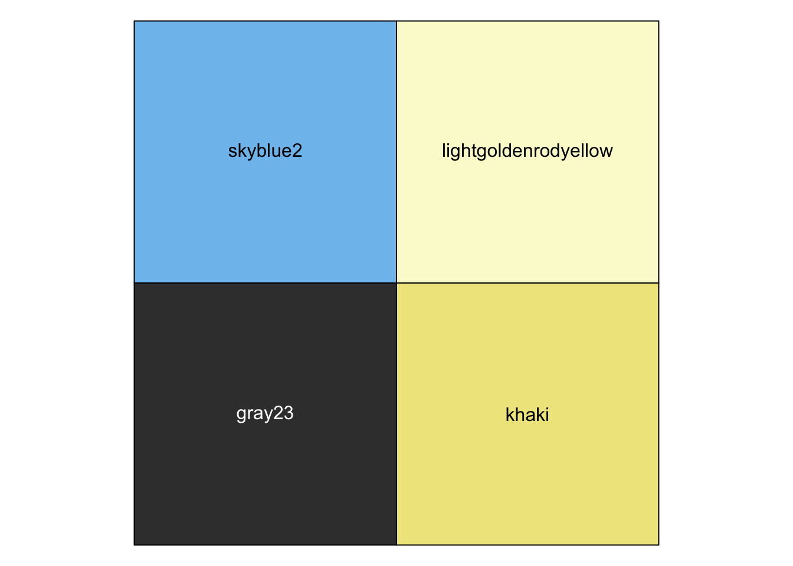

library(ggplot2) ## loading the packages we needlibrary(tibble)mpg ## loading the data set
# A tibble: 234 × 11
manufacturer model displ year cyl trans drv cty hwy fl class
<chr> <chr> <dbl> <int> <int> <chr> <chr> <int> <int> <chr> <chr>
1 audi a4 1.8 1999 4 auto… f 18 29 p comp…
2 audi a4 1.8 1999 4 manu… f 21 29 p comp…
3 audi a4 2 2008 4 manu… f 20 31 p comp…
4 audi a4 2 2008 4 auto… f 21 30 p comp…
5 audi a4 2.8 1999 6 auto… f 16 26 p comp…
6 audi a4 2.8 1999 6 manu… f 18 26 p comp…
7 audi a4 3.1 2008 6 auto… f 18 27 p comp…
8 audi a4 quattro 1.8 1999 4 manu… 4 18 26 p comp…
9 audi a4 quattro 1.8 1999 4 auto… 4 16 25 p comp…
10 audi a4 quattro 2 2008 4 manu… 4 20 28 p comp…
# ℹ 224 more rows
Exercise 1
mpg |>ggplot(aes(displ, hwy, colour = drv, shape = model)) +## creating our plot, including changing shape of points depending on modelgeom_point(show.legend =FALSE,) +## removing the legendtheme_void() +## changing a themescale_color_hue() ## setting the color palette
Warning: The shape palette can deal with a maximum of 6 discrete values because more
than 6 becomes difficult to discriminate
ℹ you have requested 38 values. Consider specifying shapes manually if you need
that many have them.
Warning: Removed 199 rows containing missing values or values outside the scale range
(`geom_point()`).
Exercise 2
library(ggplot2)library(tibble)polar_art <-function(seed, n, palette) {# set the state of the random number generatorset.seed(10)# data frame containing random values for # aesthetics we might want to use in the art dat <-tibble(x0 =runif(n),y0 =runif(n),x1 = x0 +runif(n, min =-.2, max = .2),y1 = y0 +runif(n, min =-.2, max = .2),shade =runif(n), size =runif(n) )# plot segments in various colours, using # polar coordinates and a gradient palette dat |>ggplot(aes(x = x0,y = y0,xend = x1,yend = y1,colour = shade,size = size )) +geom_segment(show.legend =FALSE) +coord_polar() +scale_y_continuous(expand =c(0, 0)) +scale_x_continuous(expand =c(0, 0)) +scale_colour_gradientn(colours = palette) +scale_size(range =c(0, 10)) +theme_void()}polar_art(seed =5, n =55, palette =c("deepskyblue", "aquamarine", "violet"))
Warning: Using `size` aesthetic for lines was deprecated in ggplot2 3.4.0.
ℹ Please use `linewidth` instead.
library(ggplot2)library(tibble)polar_art <-function(seed, n, palette) {# set the state of the random number generatorset.seed(seed)# data frame containing random values for # aesthetics we might want to use in the art dat <-tibble(x0 =runif(n),y0 =runif(n),x1 = x0 +runif(n, min =-1, max =1),y1 = y0 +runif(n, min =-1, max =1),shade =runif(n), size =runif(n) )# plot segments in various colours, using # polar coordinates and a gradient palette dat |>ggplot(aes(x = y0,y = x0,xend = x1,yend = y1,colour = shade,size = size )) +geom_segment(show.legend =FALSE) +coord_polar() +scale_y_continuous(expand =c(6, 6)) +scale_x_continuous(expand =c(6, 6)) +scale_colour_gradientn(colours = palette) +scale_size(range =c(0, 100)) +theme_void()}polar_art(seed =6, n =50, palette =c("cornflowerblue", "cornsilk", "coral"))
When you have different versions of files it might be useful to have them under version control, but art is different from traditional coding files and different versions of art can be labeled using numbers. The numbers can show how the art evolved and changed. Furthermore, labeling files with numbers is easier for artists who are less familiar with git.
quarto guide
Exercise 3
library(ggthemes) ## Loading packageslibrary(scales)# the original function from the first sessionsample_canva <-function(seed =NULL) {if(!is.null(seed)) set.seed(seed)sample(ggthemes::canva_palettes, 1)[[1]]}# the extended function used in later sessionssample_canva2 <-function(seed =NULL, n =4) {if(!is.null(seed)) set.seed(seed)sample(ggthemes::canva_palettes, 1)[[1]] |> (\(x) colorRampPalette(x)(n))() }# Display the colors generated by 'sample_canva' using the 'show_col' functionshow_col(sample_canva())
sample_named_colours <-function(n) {# Get distinct named colors named_colors <-colors(distinct =TRUE)# Sample n colors sampled_colors <-sample(named_colors, n)return(sampled_colors)}# Generate a sample of 4 distinct named colorssampled_colors <-sample_named_colours(4)# Display the colors generatedshow_col(sampled_colors)

polar_art <-function(seed, n, palette) {# set the state of the random number generatorset.seed(10)# data frame containing random values for # aesthetics we might want to use in the art dat <-tibble(x0 =runif(n),y0 =runif(n),x1 = x0 +runif(n, min =-.2, max = .2),y1 = y0 +runif(n, min =-.2, max = .2),shade =runif(n), size =runif(n) )# plot segments in various colours, using # polar coordinates and a gradient palette dat |>ggplot(aes(x = x0,y = y0,xend = x1,yend = y1,colour = shade,size = size )) +geom_segment(show.legend =FALSE) +coord_polar() +scale_y_continuous(expand =c(0, 0)) +scale_x_continuous(expand =c(0, 0)) +scale_colour_gradientn(colours = palette) +scale_size(range =c(0, 10)) +theme_void()}polar_art(seed =5, n =55, palette =c(sampled_colors))
# Define the palette generating functionsample_random_canva <-function(seed =NULL) {# Set seed if providedif (!is.null(seed)) set.seed(seed)# Unlist the canva palettes to get 600 distinct colors all_colors <-unlist(ggthemes::canva_palettes)# Sample 1 color randomly from the set of 600 colors sampled_color <-sample(all_colors, 4)return(sampled_color)}# Display the color generated by 'sample_random_canva' using the 'show_col' functionshow_col(sample_random_canva())
Exercise 4
library(ggplot2)library(tibble)library(dplyr)
Attaching package: 'dplyr'
The following objects are masked from 'package:stats':
filter, lag
The following objects are masked from 'package:base':
intersect, setdiff, setequal, union
sample_canva <-function(seed =NULL) {if(!is.null(seed)) set.seed(seed)sample(ggthemes::canva_palettes, 1)[[1]]}sample_data <-function(seed =NULL, n =100){if(!is.null(seed)) set.seed(seed) dat <-tibble(x0 =runif(n),y0 =runif(n),x1 = x0 +runif(n, min =-.2, max = .2),y1 = y0 +runif(n, min =-.2, max = .2),shade =runif(n), size =runif(n),shape =factor(sample(0:22, size = n, replace =TRUE)) )}polar_styled_plot <-function(data =NULL, palette) {ggplot(data = data,mapping =aes(x = x0,y = y0,xend = x1,yend = y1,colour = shade,size = size )) +coord_polar(clip ="off") +scale_y_continuous(expand =c(0, 0),limits =c(0, 1), oob = scales::oob_keep ) +scale_x_continuous(expand =c(0, 0), limits =c(0, 1), oob = scales::oob_keep ) +scale_colour_gradientn(colours = palette) +scale_size(range =c(0, 10)) +theme_void() +guides(colour =guide_none(),size =guide_none(),fill =guide_none(),shape =guide_none() )}set.seed(123) # Set seed for reproducibilitydata <-sample_data(n =50) # Generate data set#palette <-sample_canva(seed =50) # Sample a color paletteart <-polar_styled_plot(data = data, palette = palette)# Step 3: Add ggplot2 geoms# For example, let's add points to the plotart <- art +geom_point(aes(x = x0, y = y0), color ="aquamarine", size =5)# Display the plotprint(art)
Warning in rgl.init(initValue, onlyNULL): RGL: unable to open X11 display
Warning: 'rgl.init' failed, running with 'rgl.useNULL = TRUE'.
library(tibble)library(ambient)library(dplyr)library(ggplot2)library(ggthemes)library(tictoc)library(dplyr)sample_canva2 <-function(seed =NULL, n =4) { # Define a function to generate a sample color palette from the ggthemes packageif(!is.null(seed)) set.seed(seed) # Set seed for reproductabilitysample(ggthemes::canva_palettes, 1)[[1]] |> (\(x) colorRampPalette(x)(n))() # Generate n colors using colorRampPalette}ridge_art <-function(seed =NULL, pixels =2000) { # Define a function to generate ridge artif(!is.null(seed)) set.seed(seed) # Set seed for reproductabilitylong_grid(x =seq(from =0, to =1, length.out = pixels), # Generate a long grid of coordinatesy =seq(from =0, to =1, length.out = pixels) ) |>mutate( # Pipe the grid to a mutate operationpaint =fracture( # Generate paint values using fractal noisex = x, y = y,noise = gen_simplex,fractal = ridged,octaves =8,frequency =10,seed = seed ),paint =normalise(paint) # Normalize the paint values ) |>as.array(value = paint) # Convert the resulting data frame to an array}shaded_ridge_art <-function(seed =NULL) { # Define a function to create shaded ridge art art <-ridge_art(seed) # Generate ridge artheight_shade( # Shade the ridge art based on its height using a sampled textureheightmap = art,texture =sample_canva2(seed, 253) ) |>add_shadow( # Add shadows to artshadowmap =ray_shade( # Generate shadowmap using ray shadingheightmap = art, sunaltitude =50, sunangle =45,multicore =TRUE, zscale = .05 ), max_darken = .1# Setting maximum darkening factor ) |>plot_map() # Plot the shaded ridge art}tic() # Start measuring timeshaded_ridge_art(115) # Generate shaded ridge art with a specific seed
toc() # Stop measuring time
10.634 sec elapsed
Exercise 2
sample_canva2 <-function(seed =NULL, n =4) {# Check if seed is provided, set seed for reproducibilityif(!is.null(seed)) set.seed(seed)# Sample a color palette and generate n colors using colorRampPalettesample(ggthemes::canva_palettes, 1)[[1]] |> (\(x) colorRampPalette(x)(n))()}transform_to_curl_space <-function(x, y, frequency =1, octaves =10) {# Transform coordinates to curl space using curl_noise functioncurl_noise(generator = fracture,noise = gen_simplex,fractal = fbm,octaves = octaves,frequency = frequency,x = x,y = y )}define_worley_cells <-function(x, y, frequency =3, octaves =6) {# Define Worley cells using fracture function with Worley noisefracture(noise = gen_worley,fractal = billow,octaves = octaves,frequency = frequency,value ="cell",x = x,y = y ) |># Rank the cells and normalize themrank() |>normalise()}simplex_noise <-function(x, y, frequency = .1, octaves =10) {# Generate simplex noise using fracture functionfracture(noise = gen_simplex,fractal = ridged,octaves = octaves,frequency = frequency,x = x,y = y ) |>normalise()}ice_floe <-function(seed) {# Set seed for reproducibilityset.seed(seed)# Generate a grid of coordinates grid <-long_grid(x =seq(0, 1, length.out =2000),y =seq(0, 1, length.out =2000) )# Transform coordinates to curl space coords <-transform_to_curl_space(grid$x, grid$y) grid |>mutate(# Define Worley cells using transformed coordinatescells =define_worley_cells(coords$x, coords$y),# Generate simplex noise with added Worley cells and normalize itpaint =simplex_noise(x + cells, y + cells),paint =normalise(paint) ) |># Convert resulting data frame to an arrayas.array(value = paint)}shaded_ice_floe <-function(seed) {# Generate ice floe art art <-ice_floe(seed)# Shade the ice floe art based on its height using a sampled textureheight_shade(heightmap = art,texture =sample_canva2(seed, 300) ) |># Add shadow to the shaded artadd_shadow(# Generate shadowmap using ray shadingshadowmap =ray_shade(heightmap = art, sunaltitude =23, sunangle =60,multicore =TRUE, zscale = .005 ), max_darken = .08# Set maximum darkening factor for shadows ) |># Plot the shaded ice floe artplot_map()}tic() # Start measuring time# Generate shaded ice floe art with a specific seedshaded_ice_floe(168)
# Grow a flame tree with specific parameterstree <-flametree_grow(seed =1, # Set seed for reproducibilitytime =9, # Growth time for the treeangle =c(-15, 15, 30) # Angles for tree growth)# Filter out leaf nodes from the treeleaf <- tree |>filter(id_leaf ==TRUE)# Define Base Plot:base <-ggplot() +scale_size_identity() +# Scale size identitytheme_void() +# Remove background, gridlines, and axescoord_equal() # Use equal aspect ratio for x and y axes# Define leaves: scatter plot of leaf nodesleaves <-geom_point(mapping =aes(coord_x, coord_y), # Mapping x and y coordinatesdata = leaf, # Data source is leaf nodessize =1.6, # Set size of pointsstroke =0, # Remove stroke around pointscolour ="lightpink"# Set color of points)# Define trunk: Bezier curve representing the trunk of the treetrunk <-geom_bezier(mapping =aes(coord_x, coord_y, group = id_pathtree, size = seg_wid), # Mapping x, y, group, and sizedata = tree, # Data source is the treelineend ="round", # Round line endscolour ="brown", # Color of the trunkshow.legend =FALSE# Hide legend for the trunk)# Plot:plot(base + trunk + leaves) # Add trunk and leaves to the plot and display
Glow
# Grow a flame tree with specific parameterstree <-flametree_grow(seed =1, # Set seed for reproducibilitytime =9, # Growth time for the treeangle =c(-15, 15, 30) # Angles for tree growth)# Filter out leaf nodes from the treeleaf <- tree |>filter(id_leaf ==TRUE)# Define Base Plot:base <-ggplot() +scale_size_identity() +# Scale size identitytheme_void() +# Remove background, gridlines, and axescoord_equal() # Use equal aspect ratio for x and y axes# Define leaves: scatter plot of leaf nodesleaves <-geom_point(mapping =aes(coord_x, coord_y), # Mapping x and y coordinatesdata = leaf, # Data source is leaf nodessize =2.0, # Set size of pointsstroke =0, # Remove stroke around pointscolour ="darkseagreen1"# Set color of points)# Define trunk: Bezier curve representing the trunk of the treetrunk <-geom_bezier(mapping =aes(coord_x, coord_y, group = id_pathtree, size = seg_wid), # Mapping x, y, group, and sizedata = tree, # Data source is the treelineend ="round", # Round line endscolour ="burlywood", # Color of the trunkshow.legend =FALSE# Hide legend for the trunk)# Plot:plot( base + trunk +# Add trunk to the plotwith_outer_glow( # Add outer glow effect to leaves leaves, # Leaves as geom_pointcolour ="aquamarine", # Color of outer glowsigma =5, # Standard deviation for the Gaussian blurexpand =3# Expand the outer glow effect ))
Dither
# Set seed for reproducibilityset.seed(1)# Create tibble with polar coordinatespolar <-tibble(arc_start =runif(200), # Random start angle for each arcarc_end = arc_start +runif(200, min =-.2, max = .2), # Random end angle for each arcradius =runif(200), # Random radius for each arcshade =runif(200), # Random shade for each arcsize =runif(200) # Random size for each arc)# Define Base Plot:base <-ggplot(data = polar, # Data source is polar tibblemapping =aes(x = arc_start, # Start angle mapped to xy = radius, # Radius mapped to yxend = arc_end, # End angle mapped to xendyend = radius, # Radius mapped to yendcolour = shade, # Shade mapped to coloursize = size # Size mapped to size )) +coord_polar(clip ="off") +# Use polar coordinates, clip polygons at the edgescale_y_continuous(limits =c(0, 1), oob = scales::oob_keep) +# Set y-axis limitsscale_x_continuous(limits =c(0, 1), oob = scales::oob_keep) +# Set x-axis limitsscale_colour_viridis_c(option ="inferno") +# Use Viridis color scaleguides(colour =guide_none(), size =guide_none()) +# Hide legends for colour and sizescale_size(range =c(0, 12)) +# Set size rangetheme_void() +# Remove background, gridlines, and axestheme(panel.background =element_rect(fill ="purple")) # Set plot background color# Plot:plot(base +with_halftone_dither(geom_segment())) # Add halftone dither effect to geom_segment and plot
Mask
# Define texture using geom_raster:texture <-geom_raster(mapping =aes(x, y, fill = paint), # Mapping x, y coordinates and fill colordata =long_grid( # Generate grid data for x and y coordinatesx =seq(from =-1, to =1, length.out =1000),y =seq(from =-1, to =1, length.out =1000) ) |># Piping into mutate function to add noise and generate texturemutate(lf_noise =gen_simplex(x, y, frequency =2, seed =1234), # Low-frequency noisemf_noise =gen_simplex(x, y, frequency =20, seed =1234), # Medium-frequency noisehf_noise =gen_simplex(x, y, frequency =99, seed =1234), # High-frequency noisepaint = lf_noise + mf_noise + hf_noise # Combined noise for texture ))# Define hexagon mask:hex <-tibble(x =sin((0:6)/6*2* pi), y =cos((0:6)/6*2* pi)) # Hexagon verticesmask <-geom_polygon(aes(x, y), hex, fill ="white") # Create a polygon mask# Define Base Plot:base <-ggplot() +theme_void() +# Remove axis lines, ticks, and labelscoord_equal() +# Ensure equal aspect ratioscale_x_continuous(expand =c(0, 0)) +# Expand x-axis rangescale_y_continuous(expand =c(0, 0)) +# Expand y-axis rangescale_fill_gradientn( # Define color gradient for texturecolours =c("aquamarine","blue4"), # Color gradient from aquamarine to blue4guide =guide_none() # Hide the fill legend )# Define border of the hexagon mask:border <-geom_path(aes(x, y), hex, colour ="white", size =15) # Create a thick white border around the hexagon mask# Define Text:text <-geom_text(mapping =aes(x, y, label = text), # Map x, y coordinates and label textdata =tibble(x =0, y =0, text ="ART"), # Specify position and label textsize =36, # Set text sizecolour ="gold", # Set text colorfontface ="italic"# Set fontface to italic)# Plot:plot( base +as_group(texture, text, border, id ="content") +# Group texture, text, and borderas_reference(mask, id ="mask") +# Reference the maskwith_mask("content", "mask") # Apply the mask to the content)
Displace
# Define Polygon Layer Function:polygon_layer <-function(x, y, fill ="white", alpha = .5) {geom_polygon(aes(x, y), fill = fill, alpha = alpha)}# Create polygons:poly1 <-polygon_layer(x =c(1, 0, 0), y =c(0, 0, 1))poly2 <-polygon_layer(x =c(0, 1, 1), y =c(0, 0, 1))poly3 <-polygon_layer(x =c(.3, 1, 1), y =c(0, 0, .7))poly4 <-polygon_layer(x =c(0, 0, .7), y =c(.3, 1, 1))# Define Base Plot:base <-ggplot() +coord_equal(xlim =c(0, 1), ylim =c(0, 1)) +theme_void() +theme(panel.background =element_rect(fill ="brown1"))# Define Text:text <-geom_text(mapping =aes(0.5, 0.5, label ="SPIT"), size =60, colour ="orange1", fontface ="bold")# Plot:plot( base +as_group(poly1, poly2, poly3, poly4, id ="polygons", include =TRUE) +as_reference("polygons", id ="displacement_map") +with_displacement( text,x_map =ch_alpha("displacement_map"),y_map =ch_alpha("displacement_map"), x_scale =135,y_scale =-135 ))
Blend
# Tree Growth:tree <-flametree_grow(seed =1, time =9, angle =c(-15, 15, 30))# Filter Leaves:leaf <- tree |>filter(id_leaf ==TRUE)# Define Leaves:leaves <-geom_point(data = leaf, mapping =aes(coord_x, coord_y, colour = seg_col),colour ="lightblue",size =2, stroke =0)# Define Trunk:trunk <-geom_bezier(data = tree,mapping =aes(x = coord_x, y = coord_y, size = seg_wid,group = id_pathtree ),colour ="lightblue",lineend ="round")# Define Polygon Layer Function:polygon_layer <-function(x, y, fill ="lightblue", alpha = .7) {geom_polygon(aes(x, y), fill = fill, alpha = alpha)}# Create Triangle Background:triangle <-polygon_layer(x =c(-4, 2, 2), y =c(0, 0, 6), fill ="skyblue",alpha =1)# Define Base Plot:base <-ggplot() +theme_void() +theme(panel.background =element_rect(fill ="blue", colour ="darkorange" )) +coord_equal(xlim =c(-3, 1), ylim =c(1, 5)) +scale_x_continuous(expand =c(0, 0)) +scale_y_continuous(expand =c(0, 0)) +scale_size_identity(guide =guide_none())# Combine Plot Layers and Plot:plot( base +as_group(trunk, leaves, id ="tree") +with_blend(triangle, "tree", blend_type ="xor"))
e. Put it all together
Piece 1: BRAT
# Define a function to create a polygon layerpolygon_layer <-function(x, y, fill ="white", alpha = .5) {geom_polygon(aes(x, y), fill = fill, alpha = alpha) # Create a polygon layer with specified parameters}# Define four polygons with different coordinatespoly1 <-polygon_layer(x =c(1, 0, 0), y =c(0, 0, 1)) # Polygon 1poly2 <-polygon_layer(x =c(0, 1, 1), y =c(0, 0, 1)) # Polygon 2poly3 <-polygon_layer(x =c(.3, 1, 1), y =c(0, 0, .7)) # Polygon 3poly4 <-polygon_layer(x =c(0, 0, .7), y =c(.3, 1, 1)) # Polygon 4# Create the base plotbase <-ggplot() +coord_equal(xlim =c(0, 1), ylim =c(0, 1)) +# Set equal aspect ratio and limits for x and y axestheme_void() +# Remove background and axis elementstheme(panel.background =element_rect(fill ="green")) # Set the background color# Create a text layertext <-geom_text(mapping =aes(0.5, 0.5, label ="BRAT"), # Position and label of the textsize =50, # Size of the textcolour ="black", # Color of the textfontface ="bold"# Style of the font)# Plot the base plot with polygons and text layersplot( base +as_group(poly1, poly2, poly3, poly4, id ="polygons", include =TRUE) +# Group polygonsas_reference("polygons", id ="displacement_map") +# Create a reference for displacement mapwith_displacement( text,x_map =ch_alpha("displacement_map"), # Map x-coordinate with displacementy_map =ch_alpha("displacement_map"), # Map y-coordinate with displacementx_scale =150, # Scale factor for x-coordinate displacementy_scale =-150# Scale factor for y-coordinate displacement ))
Title: BRAT Created June 3rd, 2024 My inspiration for this piece was the album cover for Charli XCX’s new album, “brat”. Her album cover is very minimalist and makes a statement in it’s simplicity. I wanted to create an alternative version of the cover that I felt reflected the alternative, electronic music. In order to create this piece, I used the tools from the pixel tutorial. Specifically, I used the displace code, which allowed me to break up words into these interesting, unreadable patterns. I like how it let me create the opposite of the original album cover, where all you can see is the title; in this one, the title still makes up the whole piece but its completely unreadable.
Title: Tree of Fire Created June 5th, 2024 My inspiration for this piece was one of my central interests and the forefront of my future career: climate change. I was inspired by the name of the code, “flame tree”, and the impacts of climate change on an extreme weather event that I’ve experienced first hand; forest fires. In order to create this piece I also used the pixel code. Specifically the glow and flamer tree code, which allowed me to create a fiery effect around the leaves.
Piece 3: Trench
library(rayshader) ##loading in packageslibrary(tibble)library(ambient)library(dplyr)library(ggplot2)library(ggthemes)library(tictoc)library(dplyr)sample_canva2 <-function(seed =NULL, n =4) {# Check if seed is provided, set seed for reproducibilityif(!is.null(seed)) set.seed(seed)# Sample a color palette and generate n colors using colorRampPalettesample(ggthemes::canva_palettes, 1)[[1]] |> (\(x) colorRampPalette(x, space ="Lab")(n))() # Use Lab color space for more vivid colors}transform_to_curl_space <-function(x, y, frequency =1, octaves =10) {# Transform coordinates to curl space using curl_noise functioncurl_noise(generator = fracture,noise = gen_simplex,fractal = fbm,octaves = octaves,frequency = frequency,x = x,y = y )}define_worley_cells <-function(x, y, frequency =3, octaves =6) {# Define Worley cells using fracture function with Worley noisefracture(noise = gen_worley,fractal = billow,octaves = octaves,frequency = frequency,value ="cell",x = x,y = y ) |># Rank the cells and normalize themrank() |>normalise()}simplex_noise <-function(x, y, frequency = .1, octaves =10) {# Generate simplex noise using fracture functionfracture(noise = gen_simplex,fractal = ridged,octaves = octaves,frequency = frequency,x = x,y = y ) |>normalise()}ice_floe <-function(seed) {# Set seed for reproducibilityset.seed(seed)# Generate a grid of coordinates grid <-long_grid(x =seq(0, 1, length.out =2000),y =seq(0, 1, length.out =2000) )# Transform coordinates to curl space coords <-transform_to_curl_space(grid$x, grid$y) grid |>mutate(# Define Worley cells using transformed coordinatescells =define_worley_cells(coords$x, coords$y),# Generate simplex noise with added Worley cells and normalize itpaint =simplex_noise(x + cells, y + cells),paint =normalise(paint) ) |># Convert resulting data frame to an arrayas.array(value = paint)}shaded_ice_floe <-function(seed) {# Generate ice floe art art <-ice_floe(seed)# Shade the ice floe art based on its height using a sampled textureheight_shade(heightmap = art,texture =sample_canva2(seed, 298) ) |># Add shadow to the shaded artadd_shadow(# Generate shadowmap using ray shadingshadowmap =ray_shade(heightmap = art, sunaltitude =30, sunangle =60,multicore =TRUE, zscale = .005 ), max_darken = .03# Set maximum darkening factor for shadows ) |># Plot the shaded ice floe artplot_map()}tic()# Generate shaded ice floe art with a specific seedshaded_ice_floe(145)
toc()
15.581 sec elapsed
Title: Trench Created June 5th, 2024 While my last piece was inspired by the more dim parts of nature (climate change, death), I created this piece with the more beautiful, yet still scary parts of nature. I noticed how the ice flows looked like terrain maps of the ocean floor, so I messed around until I got colors and shadows that resembled the deep sea. I think the piece evokes that eery feeling you get when you see videos from the deep sea: it feels like a different planet. To create this piece I used the ice flow code from the shading techniques. To change it around I edited the seed, the shadows, and the maximum darkness.
8-10 sentence summary at the end about your process: What was new for you? What was familiar? What did you learn? How did following the exercises/tutorials go for you?
This generative art assignment was completely new waters for me. This class has already been pretty challenging because I’ve had virtually no experience with R, so using it to visualize these artworks was both hard and rewarding. I really enjoyed using R for something that 1, I didn’t even know it could do, but 2, something very creative. It ws interesting navigating the juxtaposition between the code that feels so artificial and the artwork which can be very personal and unique. I learned a lot about image generation, colors, and being free and exploratory with my code. However, following the exercises was definitely challenging. I couldn’t get the 3d model to work for the shading techniques no matter what I tried, and I sometimes felt I was limited in my exploration because of my limited knowledge of what and how I could change the code. Overall, I’m really glad I chose this assignment because it showed me a new side of coding and combined my interests.